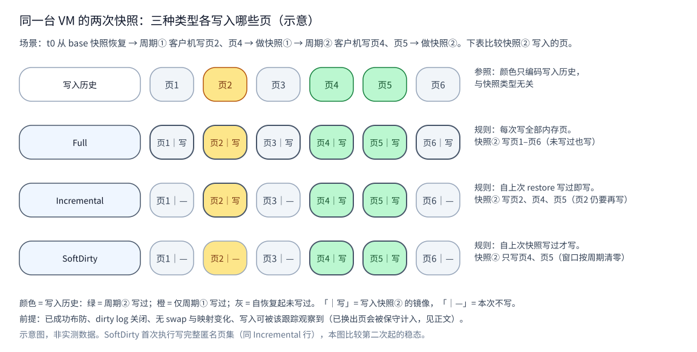
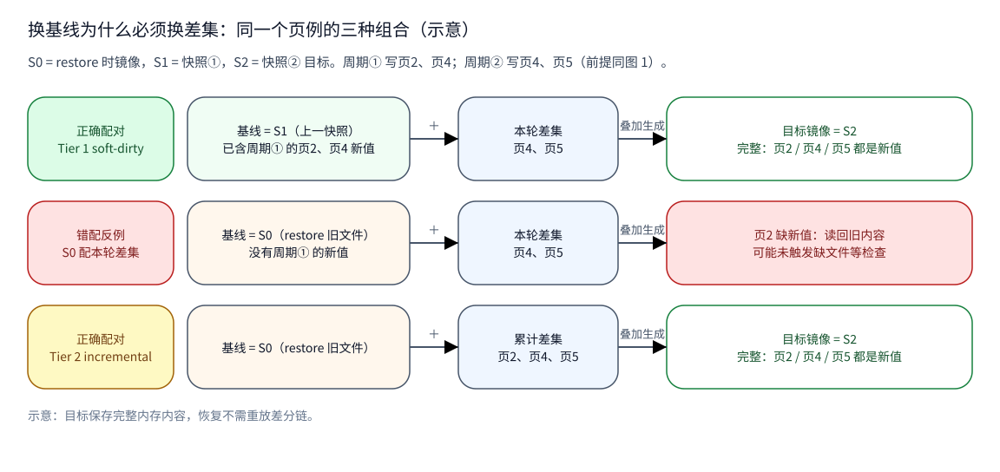
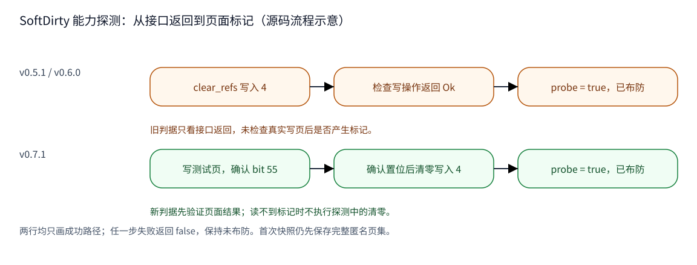

CubeSandbox 内存快照演进：v0.5.1 到 v0.7.1，SoftDirty 改了什么
同一台沙箱虚拟机连续保存快照时，为什么“增量”仍会反复写旧页？换了版本， 是否就能放心使用 SoftDirty？要回答这两个问题，需要同时看选页算法、跟踪 窗口，以及 Cubelet 给它准备的基线文件。
本文沿 v0.5.1 → v0.6.0 → v0.7.1 解析。三种快照类型和 VMM 的周期状态机
保持不变；v0.6.0 修正宿主页大小计算，v0.7.1 加强能力探测，并扩展 Commit
与 Pause 的基线选择。请求写着 soft-dirty，实际仍可能保存完整匿名页集。
| 版本 | 固定源码 | 大致时间（commit） |
|---|---|---|
| v0.5.1 | a164417f4972 | 2026-07 |
| v0.6.0 | 8721dd151971 | 2026-07 |
| v0.7.1 | 31d911e430fd | 2026-09 |
时间采用 committer 月份，不是发布日期。SoftDirty 在更早的 v0.3.0-rc1 已经引入；这里重点是三个正式版本的后续变化。结论来自固定源码，运行未验证。
1. 三种类型一直都在，差别是“脏”从何时算起
先看参与者：Cubelet 选类型和基线，CubeShim 转交请求，VMM 挑选内存页。 base 是保存完整内存内容的基线镜像；从它恢复后，写时复制（CoW）产生的 匿名私有页可能与原文件不同。reflink 则是共享底层数据块的文件克隆。
下面的S0是恢复起点快照，S1/S2是同一台VM随后两次保存得到的快照；讨论页内容 时指各自的内存文件。“页1～页6”是示意编号，从1开始，不能直接当作源码的 位图索引。图中的箭头和颜色含义在各图注中说明。
用六页内存走一遍：t0 从 S0 恢复，周期①写页2、页4，保存 S1；周期②只写 页4、页5，现在保存 S2。本例采用 4 KiB 宿主页，SoftDirty 已成功布防， dirty log 关闭，无 swap、映射变化或 prefault 造成的额外 CoW，并假定这些写入 可被跟踪观察到。
Full 写六页。Incremental 通过 pagemap/kpageflags 找匿名页，写自 t0 起 累积的页2、页4、页5：页2 本轮没变，也要再写。SoftDirty 找“匿名页且本轮 软脏标记已置位”的交集，只写页4、页5。三个版本都保留这一区别；换出页则 按源码规则保守纳入保存集合，不能用这个简化例子概括所有内存状态。E1
看图中的橙色页2：颜色表示同一段写入历史，“写”才表示进入本次快照。 它在 Incremental 行需要重写，在 SoftDirty 稳态行可以省去。

图 1：示意，非实测。首次 SoftDirty 尚无有效窗口，保存范围同 Incremental； 图中比较第二次起的稳态。证据：E1、E2。
少写页不等于镜像缺页。在本文的 Cubelet 增量路径里，目标先从 base 克隆， 再覆盖选中页，最终仍保存完整内存内容；恢复不用重放 S0→S1→S2 差分链。 Full 可以写入新建目标。完整内存文件之外，恢复 VM 仍需要配置和设备状态。
2. 保持不变的约定：窗口必须与基线配对
三个版本的 VMM 都从“未布防”开始：第一次 SoftDirty 先保存完整匿名页集， 再调用 probe；成功后才建立下个窗口。稳态保存匿名页与软脏位的交集，写完 清零标记重新布防。如果重布防失败，本次页写入已经完成，VMM 解除布防； 下一次才回到完整匿名页集并重试探测。E2
这个状态机要求目标含有配套的 base。VMM 检查文件是否存在，却不核验它对应 哪个快照时刻；Cubelet 必须选对基线。沿用页例：若 S1 丢失，直接把本轮 页4、页5覆盖到 S0，会漏掉周期①的页2新值；改用累计页2、页4、页5才补得齐。

图 2：示意，非实测。S1 配本轮差集，S0 配自恢复起的累计集合。中间反例中的 两个文件均可存在，缺文件检查仍可能发现不了页2的旧值。证据：E3。
v0.5.1 的旧路径已经按这个原则选择：上一快照配 SoftDirty；找不到它，就用 最近一次恢复镜像配 Incremental；两者都不可用，才写 Full。v0.6.0 保留 同一份选择代码。Commit 推进“上一快照”绑定，刻意不推进“最近恢复”绑定， 因为两种算法的窗口起点不同。E3
3. v0.6.0：同一套选页逻辑，先把“页”量对
v0.5.1 的匿名页扫描和 SoftDirty 扫描都把一页硬编码为 4096 字节。但是 宿主 pagemap 的索引按内核实际页大小计算。在 64 KiB 宿主上，用 4 KiB 计算起始页号、扫描条目和输出范围会错位；它影响两条增量路径。E4
v0.6.0 将这些计算统一到缓存的 sysconf(_SC_PAGESIZE) 结果，并共用
“把连续选中页合成字节范围”的 helper。六页例的选中页号不变，但每页的
字节跨度必须正确：64 KiB 页要按 65536 步进。v0.7.1 保留这一实现。
源码中的测试向同一位图注入 4096 和 65536，检查范围位置与长度按页尺度变化。 这是测试设计证据；本文没有执行这些测试，也未验证真实 64 KiB 宿主恢复。 页尺度修正解决索引问题，SoftDirty 是否可用仍取决于内核跟踪能力和访问权限。
4. v0.7.1：从“清零写成功”到“看见页标记”
v0.5.1 与 v0.6.0 的 probe 只向 /proc/self/clear_refs 写入“4”：
返回成功就认为可以布防。这个旧机制没有验证实际写页后是否出现软脏标记，
所以写操作成功本身不能证明跟踪有效。
v0.7.1 的新路径先分配一页匿名测试内存，写入一个字节，再读取该页的 pagemap 软脏位（bit 55）。只有确实读到标记，才执行全进程清零并返回成功；测试页随 对象释放。看图中两行的判据：旧行看接口返回，新行先看页面结果。E5

图 3：固定源码的流程示意，非运行结果。任一步失败都会使 probe 返回 false； 新路径读不到标记时不执行后续清零。证据：E5。
变化发生在 probe，而不是第一次快照改写成纯差集：VMM 仍先写匿名页集， 再探测。新版增加测试页的分配、写和读位；无法确认标记时可避开探测中的 全进程清零。这是设计取舍，本文没有测量暂停时间或性能收益。
分配失败、pagemap 读取失败、标记未置位、清零失败，都可能返回 false。
因此“未布防”日志只说明窗口没建立，连源码中的“kernel lacks”日志也不能
单独证明内核配置缺失。三个版本所带的同一份 x86 内核配置样本均未启用
CONFIG_MEM_SOFT_DIRTY；这不代表所有 x86 或 ARM64 部署的配置。E6
5. v0.7.1：Commit 多一个基线，Pause 有自己的规则
v0.7.1 把基线访问接入存储 backend，并在原三层 Commit 选择之间插入 Tier 2b：本地 snapshot catalog 中的两个基线都不可用时，尝试克隆 S3 恢复后持有的导入内存卷， 用 Incremental 覆盖。算法没换，变化是多了一处能提供“最近恢复镜像”的来源。
| Commit 顺序 | 基线 | 类型 |
|---|---|---|
| Tier 1（三版均有） | 上一快照 | SoftDirty |
| Tier 2（三版均有） | 最近恢复快照 | Incremental |
| Tier 2b（v0.7.1 新增） | 满足恢复身份条件的导入内存卷 | Incremental |
| Tier 3（三版均有） | 新建目标，无基线 | Full |
Tier 2b 不以“卷还在”作为充分条件：卷必须非空且有名称，Cubelet 记录的 restore-base 与 pause ID 还必须有效且相等。Rollback 后留下的旧卷，或 不透明恢复后失效的绑定，不能直接复用；相关守卫和回退测试已在源码中。E7
Pause 的演进要另看业务入口。v0.5.1 / v0.6.0 通过 task.Pause 调用 shim， 其默认 SnapshotConfig 选择 Full；内部恢复后会作废两个基线绑定。v0.7.1 的 CoW Pause 则准备可登记的内存对象，将选定类型交给 PauseToSnapshot；它选择 Incremental 或 Full，没有直接选择 SoftDirty。E8
新 Pause 会尝试自有内存卷，再按“启动祖先是否也是最近恢复镜像”判断能否 复用祖先；否则尝试最近恢复快照，或 Full。仍用 S0/S1 的例子：从 S1 恢复后， 只覆盖新匿名页到 S0 会丢失 S1 已有、恢复后没再写的内容，不能总沿用启动模板。
从新的 Pause 快照创建恢复时，Cubelet 记录真实 restore-base，并保留需要的 Pause 绑定。因而不能继续说“所有 Pause/Resume 之后 Commit 都必然 Full”； 残留的原地 opaque resume 作废逻辑仍在，具体结果由调用路径和可用基线决定。
6. 请求成功之外，还要看错误与验证边界
VMM 中，probe 失败或写后重布防失败可以降级；匿名页过滤、目标文件打开和 页写入失败仍会报错。启用 dirty log 时，三个版本都先走独立脏位图路径并 提前返回，本文三类型页例不适用。E2、E9
Cubelet 中，本地 catalog 查询或存储对象路径解析失败会被包装成“基线不可用”，进入下一层。 Tier 1/2 成功解析后的克隆失败会直接返回；v0.7.1 的 Tier 2b 查询或克隆失败 则会继续 Full。Full 创建失败仍会返回错误，不能概括成“任意存储错误都降级”。
三个版本的 full / incremental / soft-dirty 序列化值保持不变；这只说明
类型名兼容，完整快照跨版本恢复兼容未验证。SoftDirty 少写旧页的潜力与
读页标记、清零重布防的成本共同存在，收益取决于负载及实际生效的跟踪方式。
本文没有运行 VM、快照、Rust/Go 测试或基准实验。未确认项包括 guest vCPU/DMA 写入覆盖、64 KiB 宿主恢复内容、失效/重布防后的多周期结果、并发快照竞态、 S3 跨节点恢复内容，以及三个版本间的完整恢复兼容。
源码证据与扩展阅读
变化分类：v0.5.1→v0.6.0 的页尺度处理 changed，核心周期状态机和 Commit 选择 unchanged；v0.6.0→v0.7.1 的 probe、存储基线来源及 Pause 路径 changed， 选页交集与类型值 unchanged。以下均是固定源码事实；反例是据算法推导的示意， 测试只表示用例存在。完整差异和复核记录保留在研究档案。
- E1 · 类型与选页（local fact，三版独立核对）： SnapshotType 定义 v0.5.1、 v0.6.0、 v0.7.1； anon 与 soft-dirty 交集 v0.5.1、 v0.6.0、 v0.7.1。 换出页保守纳入规则：pagemap_anon 的 v0.5.1:169–176、 v0.6.0:239–247、 v0.7.1:239–247； get_soft_dirty_pages 的 v0.5.1:233–247、 v0.6.0:233–247、 v0.7.1:308–322。
- E2 · 首次、稳态与次周期回退（local fact）：send_soft_dirty_memory v0.5.1:2505–2623、 v0.6.0:2492–2610、 v0.7.1:2496–2614。 函数体三版一致，调用的 probe 则发生变化。
- E3 · 基线窗口与旧三层选择（local fact；页例为 inference）： prepareCommitMemoryArtifact v0.5.1:188–242、 v0.6.0:188–242； Commit 只推进 runtime-snapshot 的调用 v0.5.1:208、 v0.6.0:208、 v0.7.1:218。
- E4 · 页尺度修复与测试（local fact，测试未执行）： v0.5.1 的 4096 常量 pagemap_anon:27、 soft_dirty:36； v0.6.0 的 host_page_size / coalesce、 扫描索引、 4K/64K 测试； v0.7.1 的相同页尺度实现。
- E5 · probe 的判据变化（local fact）： 只看 clear 返回值 v0.5.1:133–141、 v0.6.0:132–140； 测试页验证及成功后布防 v0.7.1:156–214。 该局部探测不等于已验证全部 guest 写入来源。
- E6 · 内核配置样本（local config fact）： configs/kernel-oc9.x86_64.config 的未启用项 v0.5.1:1054、 v0.6.0:1054、 v0.7.1:1054。 不作为实际宿主身份或全架构能力证明。
- E7 · v0.7.1 Commit 的新增基线与错误分支（local fact，测试未执行）： Tier 1/2/2b/3、 导入卷身份守卫、 成功 / 空卷 / 克隆失败回退测试。 catalog/对象解析的 sentinel 包装 v0.5.1、 v0.6.0、 v0.7.1。
- E8 · Pause 与恢复身份（local fact；S0/S1 反例为 inference）： 默认 Full 的旧 pause_vm_cube v0.5.1、 v0.6.0； Default 的类型定义见 E1，SnapshotConfig 默认派生。 v0.7.1 Pause 选型、 实际交付类型、 Create 恢复绑定； opaque 作废逻辑 v0.5.1、 v0.6.0、 v0.7.1。
- E9 · dirty_log 优先与三类型分派（local fact）： MemoryManager::send v0.5.1:3034–3141、 v0.6.0:3021–3128、 v0.7.1:3025–3132。
继续了解：快照创建提交链 （该机制页有自己的历史固定基线，不能替代本文的三个版本证据）。
把底层机制分开看：
- Snapshot 怎样识别与管理脏页：页信息、跟踪窗口与基线推进。
- 内存如何恢复与运行时 CoW：文件映射、缺页、独立 Sandbox 的私有页。
- XFS/reflink 内存卷克隆：文件 inode、共享磁盘块与覆盖时的分裂。